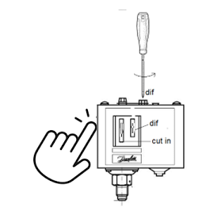

Thème / DomaineSimulation de charge au poids et lecture de relevés
Module atelier S8-E1 · 4 h × 2 passagesRéglage de consignes guidé — consolidation
SéquenceS8 · semaines 26-27
Nom________________
Prénom________________
Date (passage 1 / passage 2)_______ / _______
Positionnement01234
Mise en situation professionnelle
Ordre d'intervention n° OI-S8-3 : le commerçant de l'arrière-boutique a changé d'avis. Depuis la
mise en service réglée en S7-E1, il a précisé ses besoins réels d'exploitation (une température un peu
différente, une sécurité qu'il veut renforcée) et remet au professeur un nouveau cahier des charges. Le
professeur, responsable du site, vous confie une mission précise : re-régler seul(e) les organes de
régulation du coffret (thermostat, pressostat) pour qu'ils correspondent exactement à cette nouvelle demande.
La charge en fluide, elle, se prépare à blanc en S8-F1/F2 : ici, on consolide la régulation.
Tâches
T14 Régler l'installation en fonctionnement (découverte — première fois que ce libellé de tâche est visé, même si le geste est déjà connu) T11 Contrôler les circuits hors fonctionnement (réactivé)
Savoirs
S5.6 Réseaux, matériels électriques et de régulation augmenté — le même geste de réglage qu'en S7-E1, mobilisé cette fois en autonomie
Savoir-être
Autonomie assumée · sécurité électrique sans rappel · geste de réglage sans forcer une vis · honnêteté de la preuve de déclenchement
Compétences (≤ 4)
ConfortementC4.6 Paramétrer ou régler les valeurs de consigne sur organe de régulation ou de sécurité ConfortementC3.6 Câbler, repérer, connecter les liaisons électriques et électroniques
Ce qui change depuis S7-E1 — en S7, on t'a guidé ; aujourd'hui, tu règles
SEUL(E) — En S7-E1, avant chaque réglage, le professeur démontrait le geste sur un poste témoin et vous
disposiez d'une fiche pas à pas très détaillée (des cases à cocher à chaque étape). Ce n'est plus le cas
aujourd'hui. Il n'y aura ni nouvelle démonstration ni fiche de guidage détaillée : vous allez
mobiliser seul(e) la méthode que vous connaissez déjà (lire le cahier des charges → traduire en consigne →
régler → prouver le déclenchement), face à un cahier des charges que vous n'avez jamais vu. Le professeur
reste responsable de la sécurité : il valide avant toute mise sous tension, et lui seul manœuvre
l'azote. Mais sur la méthode, il n'intervient plus, sauf si vous êtes réellement bloqué(e) — pas pour
une aide de confort.
Passage 1 / Passage 2 — ce qui change
Passage 1 (semaine 26) — nouveau cahier des charges n° 1, autonomie encadrée : le professeur rappelle la
méthode en deux ou trois phrases, sans redémontrer le geste, puis vous distribue un cahier des charges
différent de celui de S7-E1. Vous traduisez et réglez seul(e) le thermostat TH1 puis le
pressostat de sécurité ; le professeur valide chaque étape juste avant la mise sous tension ou la mise en
pression. Passage 2 (semaine 27) — le client change ENCORE d'avis, autonomie maximale : nouveau cahier des
charges n° 2. Aucun rappel de méthode écrit ne vous est distribué : vous mobilisez votre mémoire et votre
carnet de bord (F3). Différenciation forte : si vous terminez en avance, vous re-réglez en plus le
pressostat HP de sécurité, avec sa propre procédure.
Objectifs — je serai capable de…
lire seul(e) un nouveau cahier des charges client (valeurs remises au poste par le professeur,
« à faire valider ») et en extraire les valeurs à re-régler ;
traduire seul(e) chaque valeur du cahier des charges en une consigne précise : quel organe,
quelle vis, quelle valeur — sans fiche de guidage pas à pas ;
re-régler, en autonomie, la consigne du thermostat de régulation (repère TH1, le même
qu'en S7-E1), sur le circuit d'essai ;
re-régler, en autonomie, la consigne — et le différentiel — du pressostat de
sécurité, sur le circuit d'essai à l'azote (le professeur reste seul maître de l'azote) ;
prouver le déclenchement réel de chaque organe re-réglé et le noter honnêtement, même si le
résultat n'est pas celui attendu du premier coup ;
(différenciation, élèves rapides)régler en plus le pressostat HP de sécurité.
Prérequis — je sais déjà…
En S7-E1, j'ai déjà réglé, guidé(e) pas à pas par le professeur, le
thermostat TH1 et le pressostat de sécurité, à partir d'un premier cahier des charges. Je sais ce qu'est une
consigne et un différentiel, et je sais qu'on règle toujours la consigne avant le
différentiel, jamais l'inverse (S5-T1, méthode déjà appliquée en S7-E1). Je sais câbler un départ
moteur complet avec sécurité thermique et vérifier un câblage support hors tension, en autonomie
(S5-E1, S5-E2, consolidé S6-E1, réinvesti S7-E1). Je sais réaliser seul(e) une consignation et une
vérification d'absence de tension (VAT) avant toute intervention (acquis depuis S1).
Matériel
1 circuit d'essai « thermostat TH1 » préparé par le professeur (le même repère qu'en S7-E1)
1 circuit d'essai « pressostat » préparé par le professeur (source de variation de pression : bouteille
d'azote et détendeur — manœuvrés uniquement par le professeur)
(différenciation) 1 circuit d'essai « pressostat HP » disponible pour les élèves rapides
Tournevis plat adapté aux vis de réglage (cut-in / différentiel)
Multimètre numérique + jeu de cordons de mesure (contrôle hors tension du câblage support)
Nouveau cahier des charges (un par poste, remis par le professeur, valeurs vierges à recopier —
différent de celui de S7-E1)
Fiche de sécurité à cocher + crayon
Mon carnet de bord (F3) et ma fiche « carte d'identité » de S5-T1, à ressortir en cas de doute — mais
sans fiche de guidage pas à pas neuve
Sécurité — l'autonomie porte sur la méthode, jamais sur la sécurité
Le circuit d'essai est préparé par le professeur, mais il reste électrique
(choc possible sur un conducteur nu) et, pour le pressostat, sous pression d'azote. Le pressostat est
un appareil fragile : son soufflet peut se percer si on force une vis en butée. Vous connaissez la
consignation et la vérification d'absence de tension (VAT) depuis S1, et vous avez déjà appliqué toutes ces
règles en S7-E1 : aujourd'hui, personne ne vous les redémontre — mais elles ne changent pas d'un iota.
Risque
Parade
Choc électrique par contact direct avec une pièce sous tension du circuit d'essai
Ne jamais toucher un fil ou une borne sans avoir vérifié l'absence de tension (VAT). Le professeur seul remet le circuit sous tension, après validation de votre réglage.
Vis de réglage forcée en butée (risque de casse du soufflet du pressostat)
Ne jamais forcer une vis qui résiste : arrêter et appeler le professeur. Tourner doucement, par petits quarts de tour.
Azote sous pression du circuit d'essai (bouteille, détendeur)
Seul le professeur manœuvre le détendeur et fait varier la pression. Montée toujours douce, jamais brutale. Lunettes pendant la manipulation.
Brûlure froide au contact du bulbe du thermostat pendant une variation de température
Ne jamais toucher directement une source de froid utilisée pour la variation ; laisser le professeur manipuler la source de variation.
« Foncer » sans vérifier, par excès de confiance après S7-E1
L'autonomie ne dispense pas de faire valider chaque réglage avant mise sous tension : ce n'est pas un contrôle de méthode, c'est un contrôle de sécurité.
Résultat de déclenchement « arrangé » pour aller plus vite
Noter uniquement ce qui a été observé réellement : un déclenchement qui n'a pas eu lieu se déclare comme tel, jamais inventé.
La consignation — rituel NF C 18-510, appliqué sans rappel
1. Couper — ouvrir le sectionneur du poste avant toute intervention sur le câblage support.
2. Vérifier l'absence de tension (VAT) — contrôler au multimètre, position voltmètre.
3. Condamner / signaler — le professeur garde la main sur la mise sous tension et sur l'azote.
4. Travailler hors tension — je règle la vis, je contrôle le câblage support, toujours sectionneur ouvert.
Gestes interdits
Jamais toucher un fil ou une borne sans avoir vérifié l'absence de tension ;
Jamais forcer une vis de réglage en butée — le soufflet du pressostat est fragile ;
Jamais manœuvrer soi-même la bouteille d'azote ou son détendeur — seul le professeur le fait ;
Jamais mettre le circuit d'essai sous tension moi-même — seul le professeur le fait, après
validation du réglage ;
Jamais noter une preuve de déclenchement qui n'a pas été réellement observée ;
Jamais forcer l'allure pour « prouver » son autonomie : appeler le professeur en cas de blocage réel
reste un réflexe professionnel, pas un échec.
Avant de commencer, complétez la fiche de sécurité à cocher ci-dessous et
faites-la viser par le professeur, à chaque passage. Tenue et EPI exigés :
Chaussures de sécurité ; lunettes pendant toute manipulation du circuit d'essai à l'azote ; pas de
bijoux ni de montre.
Fiche de sécurité à cocher — document CAP, F. Henninot.
🚨 En cas d'incident — couper (interrupteur général ou arrêt
d'urgence de l'atelier, localisé dès l'entrée), alerter immédiatement le professeur, ne jamais
déplacer un camarade électrisé sans certitude sur son état. La trousse de secours est localisée dès
l'entrée dans l'atelier.
Méthode — vous la connaissez déjà, mobilisez-la seul(e)
En S7-E1, vous avez appris à traduire le besoin d'un client en réglages
précis sur les organes du coffret : lire le cahier des charges, identifier l'organe et la vis concernés,
afficher la valeur, puis prouver le déclenchement réel. Rien de nouveau à apprendre aujourd'hui :
le nouveau cahier des charges change les valeurs, pas la méthode. C'est exactement pour cela que ce module
s'appelle une consolidation.
Nouveau cahier des charges client — poste n° — passage
Valeurs remises au poste par
le professeur — à recopier ici avant de commencer, « à faire valider ». Ce cahier des charges est
différent de celui que vous avez rempli en S7-E1.
Type de local à réguler :
Température de consigne demandée par le commerçant : °C
Sécurité demandée sur le groupe (organe et seuil) :
Remarque particulière du commerçant, ce qui a changé depuis S7 :
Étape 1 — traduire seul(e) : quel organe, quelle vis, quelle valeur ?
Comme en S7-E1, pour chaque ligne du nouveau cahier des charges, répondez seul(e) à
trois questions : quel organe est concerné (thermostat ou pressostat) ? quelle vis de cet organe
dois-je tourner (la vis de consigne, ou la vis de différentiel) ? et quelle valeur dois-je afficher ?
Aucune fiche de guidage détaillée cette fois : le tableau ci-dessous suffit.
Ligne du nouveau cahier des charges
Organe
Vis
Valeur à régler
Température de consigne du local
Sécurité demandée sur le groupe
Étape 2 — rappel de méthode (pas votre valeur du jour)
Sur un pressostat, la vis de consigne (cut-in) règle la pression
d'enclenchement, et la vis de différentiel (dif) règle l'écart jusqu'au point de coupure. Rappel de
l'exemple déjà vu en S7-E1 (notice AFPA, à titre d'illustration de la méthode de calcul —
ce n'est pas la valeur que vous allez régler aujourd'hui) : enclenchement à 4,2 bar, coupure à 1,8 bar
→
Différentiel = 4,2 − 1,8 = 2,4 bar
On règle toujours d'abord le point fixe
(la consigne, ici l'enclenchement), puis le différentiel — jamais l'inverse. Vous l'avez déjà appliqué
en S7-E1 : appliquez-le seul(e), aujourd'hui, avec les nouvelles valeurs de votre cahier des charges.
Question — En S7-E1, le professeur vous démontrait le geste avant chaque
réglage. Aujourd'hui, non. Qu'est-ce qui, dans votre tête, doit remplacer cette démonstration pour ne pas vous
tromper d'organe ou de vis ?
Les deux vis de réglage d'un pressostat : « cut in » (consigne d'enclenchement) et « dif » (différentiel), le même repère qu'en S7-E1. D'après « reglage bp sous azote », F. Henninot, 02_CAP-IFCA/C4-MettreEnService.
JALON A — re-régler le thermostat TH1, EN AUTONOMIE — ≈ 55 min
Le thermostat TH1 est le même organe que celui réglé en S7-E1. Vous allez le
re-régler seul(e), sans démonstration ni fiche pas à pas : le professeur ne valide votre réglage que
juste avant la mise sous tension.
1. Préparer le poste
☐ 1. Vérifier que le circuit d'essai est hors tension (sectionneur du poste ouvert)
☐ 2. Repérer sur le thermostat TH1 la vis (ou molette) de consigne — vous savez déjà où elle se
trouve depuis S7-E1
☐ 3. Recopier, depuis votre nouveau cahier des charges (feuille précédente), la température de
consigne demandée par le commerçant : °C
2. Régler la consigne — seul(e)
☐ 1. Tourner doucement la vis de consigne jusqu'à afficher, sur l'échelle du thermostat, la valeur
demandée par le nouveau cahier des charges
☐ 2. Faire viser le réglage par le professeur avant toute mise sous tension (contrôle de sécurité,
pas d'aide sur la méthode)
☐ 3. Le professeur remet le circuit d'essai sous tension et fait varier la température
☐ 4. Observer le voyant témoin : il doit changer d'état exactement autour de la consigne réglée
3. Preuve du déclenchement
Ce qui a été observé
Résultat
Le voyant change d'état quand la température approche la consigne réglée
☐ Oui ☐ Non
Le changement d'état est cohérent avec la nouvelle consigne (pas un autre seuil)
☐ Oui ☐ Non
Si le déclenchement n'a pas lieu au bon moment,
ne cochez pas « Oui » par facilité : signalez-le au professeur et reprenez le réglage vous-même, avec son
seul appui si vous êtes réellement bloqué(e).
Question — Le cahier des charges de S8 demande-t-il la même température
que celui de S7-E1 ? Qu'est-ce que cela change concrètement pour le geste de réglage lui-même ?
JALON B — re-régler le pressostat de sécurité, EN AUTONOMIE — ≈ 70 min
Même organe qu'en S7-E1, nouvelle consigne. Vous re-réglez seul(e) : le
professeur reste seul maître de l'azote (sécurité), mais ne guide plus la traduction ni le geste de réglage
lui-même.
1. Préparer le poste
☐ 1. Vérifier que le circuit d'essai est hors tension et hors pression
☐ 2. Repérer les deux vis du pressostat : cut-in (consigne d'enclenchement) et dif
(différentiel) — voir la photo ci-dessous, le même repérage qu'en S7-E1
☐ 3. Recopier, depuis votre nouveau cahier des charges, la consigne de sécurité demandée :

Repérage de la vis de différentiel avant réglage. D'après « reglage bp sous azote », F. Henninot, 02_CAP-IFCA/C4-MettreEnService.
2. Régler la consigne, puis le différentiel — seul(e)
☐ 1. Tourner doucement la vis cut-in jusqu'à afficher la valeur de consigne du nouveau
cahier des charges
☐ 2. Faire viser le préréglage par le professeur
☐ 3. Le professeur, seul, manœuvre le détendeur d'azote pour faire varier doucement la pression du
circuit d'essai
☐ 4. Observer le point d'enclenchement, puis tourner doucement la vis dif jusqu'à obtenir
l'écart demandé par le nouveau cahier des charges pour le point de coupure
3. Contrôle hors tension du câblage support — seul(e)
Point de contrôle
Valeur attendue
Conforme ?
Continuité du câblage entre le pressostat et le voyant témoin
Différenciation forte — élèves rapides : le pressostat HP
Si vous avez terminé et fait valider le tableau ci-dessus, demandez au
professeur le circuit d'essai « pressostat HP » et un troisième volet de cahier des charges. Le pressostat HP
protège le groupe contre une pression trop haute (côté condenseur), alors que celui que vous venez de
régler protège contre une pression trop basse. Traduisez seul(e) ce nouveau volet, puis faites viser
votre traduction avant tout réglage (le professeur reste seul maître de l'azote pour cet organe aussi).
Organe
Consigne demandée
Consigne réglée
Déclenchement constaté
Pressostat HP — consigne (coupure)
☐ Oui ☐ Non
Pressostat HP — différentiel
☐ Oui ☐ Non
Question de synthèse — En S7-E1, vous étiez guidé(e) pas à pas.
Aujourd'hui, qu'est-ce qui vous a le plus manqué de cette aide, et qu'avez-vous fait pour vous en passer ?
⚠ Rappel — fin de séance — Avant de ranger, le circuit d'essai doit être
remis hors tension et hors pression par le professeur : vous ne touchez ni au sectionneur du circuit
d'essai à l'azote, ni au détendeur, en fin comme en début de séance.
☐ 1. Vérifier avec le professeur que le circuit d'essai est hors tension et hors pression
☐ 2. Remettre la molette du multimètre sur OFF, ranger les cordons sans coude serré
☐ 3. Ranger l'outillage (tournevis, multimètre) à son emplacement
☐ 4. Vérifier que le poste est propre et dégagé pour le poste suivant
Variantes
Consolidation — pour les élèves encore fragiles sur C3.6/C4.6 depuis S7-E1 : le câblage support
du circuit d'essai est déjà vérifié par le professeur, et un rappel oral bref de la méthode (sans fiche
écrite) est proposé pendant l'exercice au fil de l'eau ;
Standard — déroulement tel que décrit dans ce document, autonomie complète sur les deux organes ;
Approfondissement — les élèves rapides re-règlent en plus le pressostat HP (feuille 5) ;
après validation, ils expliquent à un pair la différence entre pressostat BP et pressostat HP, sans régler à
sa place (tutorat).
Grille d'évaluation
Échelle FrigorX : 0 Non évalué · 1 Non acquis · 2 En cours
d'acquisition · 3 Acquis · 4 Parfaitement maîtrisé. Statuts du jour : C4.6 Confortement ·
C3.6 Confortement — jamais Évaluation dans ce module (S8 ne comporte aucune évaluation propre, la
prochaine est É4 en S9).
Compétence / savoir-être
Ancrage
0 Non évalué
1 Non acquis
2 En cours
3 Acquis
4 Maîtrisé
C4.6 Paramétrer ou régler les valeurs de consigne sur organe de régulation ou de sécurité
sur T14 · S5.6
Compétence non observée ce jour.
Ne traduit pas le nouveau cahier des charges, ou règle sans lien avec les valeurs demandées, ou reste bloqué(e) sans solliciter une aide utile.
Traduit et règle en sollicitant une aide ponctuelle du professeur au-delà de la simple validation sécurité.
Traduit SEUL(E) le nouveau cahier des charges, règle SEUL(E) le thermostat TH1 et le pressostat (le professeur ne valide que la sécurité), prouve honnêtement le déclenchement des deux organes.
Comme « Acquis », et règle en plus, seul(e), le pressostat HP ; ou aide un pair en difficulté sans régler à sa place.
C3.6 Câbler, repérer, connecter les liaisons électriques et électroniques
sur T11 · S5.6
Compétence non observée ce jour.
Câblage support non conforme, ou consignation non respectée.
Contrôle hors tension du câblage support correct, avec une aide.
Contrôle hors tension du câblage support seul(e), conforme, sans aide.
Comme « Acquis », et repère seul(e) une anomalie du câblage support avant de commencer le réglage.
Savoir-être — autonomie, sécurité, honnêteté de la preuve
observation continue
Non observé ce jour.
Geste dangereux (vis forcée, azote manœuvré seul), ou preuve de déclenchement inventée.
Sécurité respectée, mais sollicite encore fréquemment le professeur pour des étapes déjà connues depuis S7-E1.
Autonomie assumée sur la méthode, sécurité sans rappel, note honnêtement chaque preuve de déclenchement.
Comme « Acquis », et aide un pair à retrouver son autonomie sans faire à sa place.
Ce document complété (les deux passages : cahier des charges recopié, tableaux de traduction et de
preuve, questions répondues)
Fiche de sécurité à cocher visée par le professeur, aux deux passages
Bon de commande hebdomadaire
D'après : « Plan de séance »,
« Document élève - TP » et « Document professeur - corrigé », S7-E1 · Régulations simples — premier réglage,
F. Henninot (repère TH1, méthode consigne/différentiel, exemple AFPA 4,2/1,8/2,4 bar — continuité directe, ce
module en retire le guidage pas à pas) ; « PROCEDURE REGLAGE PRESSOSTAT BP SECURITE » et « PROCEDURE REGLAGE
PRESSOSTAT HP SECURITE », F. Henninot, 02_CAP-IFCA/C4-MettreEnService (méthode professionnelle du réglage
cut-in puis différentiel, pour le pressostat BP et pour le pressostat HP) ; « reglage bp sous azote », même
dossier (méthode cut-in/dif sous azote, photos de la vis de réglage). Symboles : bibliothèque de symboles
inerWeb (pressostat_hp, pressostat_bp, thermostat). Aucune valeur de consigne de ce document n'est inventée :
toutes proviennent du nouveau cahier des charges remis au poste par le professeur, « à faire valider ».
Annexe — le nouveau cahier des charges du commerçant
Cette page est à détacher ou à recopier au poste. Le professeur y a inscrit les
valeurs réelles du jour (« à faire valider ») — aucune valeur n'est préremplie dans ce document : c'est
volontaire, chaque poste reçoit un cahier des charges différent.
Cahier des charges — poste n° — passage — date
Type de local à réguler (positif / négatif, usage) :
Température de consigne demandée par le commerçant : °C
Organe de sécurité concerné (pressostat BP et/ou HP) :
Consigne de sécurité demandée (point d'enclenchement) :
Différentiel demandé (écart jusqu'au point de coupure) :
Ce qui a changé par rapport au cahier des charges de S7-E1 :
Remarque particulière du commerçant (facultatif) :
Visa professeur (validation des valeurs, avant distribution) :
Toutes les valeurs de cette
annexe sont fixées par le professeur, cohérentes avec le matériel réellement disponible à l'atelier — « à
faire valider ». Aucune valeur n'est affirmée par ce document.